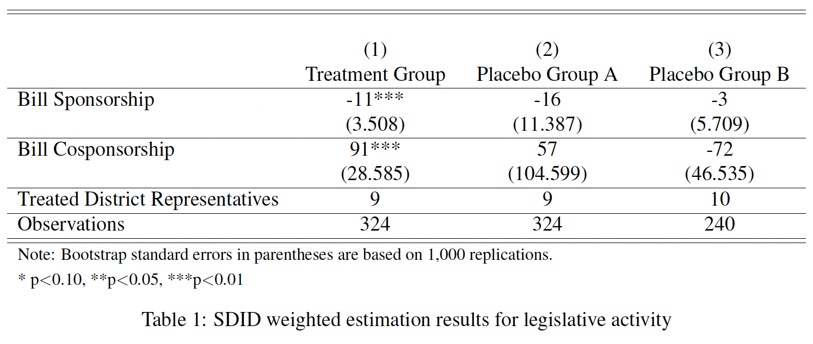

My research focuses on the intersection of legislative institutions,
race and ethnicity, political behavior, and policy-making. I examine
how racial minority legislators navigate institutional challenges and
employ strategic behaviors to represent their communities and influence
policy outcomes, with a particular focus on cooperation and representation
across racial lines. Additionally, I explore how race and electoral
competition shape legislative behavior, including sponsorship and
cosponsorship dynamics, while investigating how voting systems and
institutional designs influence policy diversity and governance.
Methodologically, I incorporate advanced tools such as Artificial
Intelligence (AI), machine learning (ML), natural language
processing (NLP), and statistical inference to analyze large-scale
political data, uncover patterns in legislative behavior, and assess
political discourse. This allows me to provide data-driven insights
into how political elites engage with marginalized communities and
influence perceptions of government legitimacy and fairness. My
research aims to shed light on the broader implications of race,
identity, and institutional structures in shaping political outcomes.
Opioid overdose deaths have surged dramatically in the 21st century,
marking one of the most severe public health crises in the United States.
As medical cannabis laws (MCLs) expanded across states, many began to
speculate whether marijuana could mitigate the opioid epidemic. While
existing research explores the health implications of MCLs, less is known
about the impact of broader marijuana policy liberalization. This preliminary
study examines the effect of Colorado's shift to legalized recreational
marijuana on opioid overdose death rates.
Using panel data on opioid overdose mortality, this study employs the
synthetic control method to construct a counterfactual—an estimate of
what Colorado’s overdose trends would have looked like had recreational
dispensaries not been introduced. This approach enables a robust comparison
between Colorado and a composite of similar states from 1999 to 2017.
Data from the CDC’s Wide-ranging Online Data for Epidemiologic Research
(WONDER) are used to build the synthetic control unit, with pre-legalization
predictor variables and robustness checks incorporated. A difference-in-differences
framework complements the synthetic control to estimate the treatment effect,
with placebo inference testing applied to assess significance.
Findings suggest a 5% decline in Colorado's opioid overdose rate post-legalization;
however, this effect was not statistically significant based on placebo in-space
analysis. These results offer limited evidence that recreational marijuana
legislation meaningfully curbed opioid-related deaths in Colorado.
Working Papers
Examining Minority and Non-Minority Legislators'
Willingness to Cooperate Across Racial Groups in Legislative Cosponsorship.
This study investigates whether minority (Black and Latine) Congressmembers are more
inclined than White legislators to engage in cooperative behaviors via bill cosponsorship,
both within their own racial and ethnic groups and with White legislators. Building
upon theories of social identity and marginalized electoral vulnerability,
I examine whether minority legislators strategically cosponsor bills introduced
by White legislators more frequently than White legislators cosponsor bills
introduced by minority legislators. By analyzing cosponsorship patterns from
multiple congressional sessions and employing fixed-effects Seemingly Unrelated
Negative Binomial Regression (SUNBR) models, I provide a nuanced understanding
of how identity influences legislative collaboration.
The Influence of Race and Electoral Competition on Representation:
Sponsorship and Cosponsorship Dynamics in Congress.
This study examines whether racial differences in legislative behavior, specifically bill
sponsorship and cosponsorship, exist between Minority (Black and Latino) and Non-minority
(White) legislators in the U.S. Congress, even after accounting for electoral conditions
such as district competitiveness and changes in House majority control. Using data from the
95th to the 117th Congresses, I employ Propensity Score Matching (PSM) using Gradient
Boosting (GB) to create comparable groups of Minority and White legislators.
Following matching, I implement a Multilevel Model (MLM) with fixed effects for
congressional sessions to analyze how individual-level factors, district characteristics,
and temporal political environments influence bill sponsorship and cosponsorship.
This study’s findings aim to provide a nuanced understanding of how race and electoral
conditions interact to shape legislative strategies over time, contributing to the broader
discourse on representation and policymaking in a diverse political landscape.
La Raza: Race and Legislator’s Responsiveness to Indigenous
Constituents in Mexico.
Co-authored with José Muzquiz (USC).
This audit experiment examines the responsiveness of Mexican legislators to constituents
from different racial groups through an email experiment using simulated constituents with
racially coded names. Legislators were randomly assigned to receive the same message from
one of three constituent profiles: Indigenous, mestiza, or European. The findings reveal
that legislators responded more frequently and were more likely to engage with the
Indigenous profile compared to the mestiza and European profiles. This study fills a
notable gap in the literature by centering indigeneity in audit experiments, which has
been largely overlooked. Additionally, it represents the first audit study to explore
racial discrimination in the context of Mexican politics.
Equity and Exhaustion: The Link Between Fairness
Perceptions and Burnout in Local Government Workers.
Co-authored with Esther Gonzalez (USC) and Cynthia Wilkes (US OES-GSA).
This study explores the relationship between perceptions of procedural and distributive
justice and burnout among local government employees, using data from a 2018 survey of
over 1,000 employees in Los Angeles County. Testing the Conservation of Resources (COR)
Theory and the Job Demands-Resources (JD-R) Model, we applied a series of OLS regressions
to examine the impact of fairness perceptions on burnout outcomes. The results show that
lower perceptions of procedural fairness are strongly associated with higher levels of
emotional exhaustion, cynicism, and inefficacy. While distributive fairness also affects
burnout, its influence is less pronounced. Significant variations are observed across
gender and racial groups, with women of color experiencing the highest levels of emotional
exhaustion and cynicism. These findings underscore the importance of procedural fairness
in reducing burnout and highlight the need for equitable processes to improve employee
well-being and retention in local government settings.
Street-Level Bureaucrats and Political
Control: Do Los Angeles Police Change their Behavior in Response
to Policy Changes. Co-authored with Benjamin A.T. Graham (USC),
Harry Muttram (UC-Riverside), Michael
Sierra-Arévalo (UT-Austin), Nicholas Weller (UC-Riverside).
The extant literature on bureaucratic delegation outlines the political
conditions under which principals should delegate discretion to agents and
offers a variety of procedural and ex-post mechanisms for controlling agent
behavior. These studies, however, often focus on bureaucrats at the federal
level. This national focus obscures how theories of political control
translate into environments in which bureaucrats have tremendous discretion,
as is true for policing. To what extent are efforts to reduce the discretion
of street-level bureaucrats successful in affecting bureaucratic behavior?
We address the question by assessing the impact of a 2022 departmental change
in the criteria needed for LAPD officers to conduct pretextual stops, in effect
reducing police discretion by requiring evidence of both a traffic violation and
“articulable information.” Using traffic stop data from the Racial and Identity
Profiling Act of 2015 and employing a synthetic difference-in-difference design
to construct a synthetic LAPD from departments across California, we find
that the policy change on average reduced the proportion of pretextual
stops conducted by ten percentage points. Consistent with street-level
bureaucracy theory, however, our evidence suggests that officers exert
considerable influence over the implementation of policy and the threat
of departmental sanctions.
Minority Elites (Co)Sponsor Differently From Non-Minorities. Causal Evidence from U.S. Congress.
[Poster | Conference Presentation].
Currently, Congress is at its highest peak of racial diversity—with 27% of legislators
identifying as non-white. While there is plenty written about how institutional factors influence
sponsorship and cosponsorship activity, scholarship continues to tell us little about how race
and ethnicity do so. How does the race and ethnicity of a legislator impact the way they sponsor
and cosponsor bills? I leverage the quasi-experimental nature of the 2016 and 2018
congressional elections to employ a synthetic difference-in-difference (SDID) estimator that
causally estimates the impact of minority legislators. I find that, on average, minority
legislators sponsor fewer bills than non-minority legislators and greatly cosponsor more
legislation. These negative effects on bill sponsorship are exacerbated when minority
legislators out-primary an incumbent. The implications of these findings highlight the
constraints that minority legislators have to influence policy at the legislative level.

Disconnected Policing:
Street-level bureaucrats, policy representation, and traffic
stops in Los Angeles. Co-authored with Lauren Brown (USC),
Raquel Delerme (USC), Benjamin A.T. Graham (USC), Kyle Hulburd (USC),
Harry Muttram (UC-Riverside), Michael Sierra-Arévalo (UT-Austin),
Jackson Trager (USC), and Nicholas Weller (USC).
This study explores how police officers, as street-level bureaucrats,
shape public perceptions of policy representation and state legitimacy.
While racial disparities in policing are well-documented, less attention
is given to how these disparities influence public attitudes. Through
a mixed-methods approach, we examine survey data and interviews from Los
Angeles residents about their experiences and expectations during
traffic stops. Despite sharing similar preferences for respectful
and fair treatment, Black and Latino residents report significantly
more negative experiences compared to White residents, and perceive
a greater gap between their expectations and actual police behavior.
These findings highlight that while policy expectations may be
consistent across racial groups, the experiences of Black and
Latine communities with police differ significantly. This study
underscores the need to consider not just formal policies but also
the actions of street-level bureaucrats in shaping public attitudes
toward the state.
Top-two open primary systems increase
ideological diversity in state legislative parties. Co-authored with
Christian Grose (USC) [Poster | Conference Presentation].
Does the top-two primary increase ideological heterogeneity in parties in state legislatures?
We argue and find that the possibility of same-party elections in the top-2 leads to greater
diversity within party caucuses in state legislatures; in contrast to closed primary systems.
In closed primaries, party caucuses are less ideologically diverse as reelection incentives
for all members within the caucus are similar. In top-two states, party caucuses will have
greater ideological diversity as some candidates will face primary reelection incentives to
move to the extreme; while other candidates will face general election reelection incentives.
We test this using a synthetic control model. We find causal evidence that the top-two primary
has increased ideological diversity in both the majority and minority party caucuses in some
legislative chambers. This effect persists for Democratic party caucuses after adoption of
top-two, but this effect for Republican party caucuses is only for a few time periods before
it reverts back to pre-treatment lower ideological heterogeneity. Implications for the top-2
and top-4 systems are discussed..
Racial Discourse in the Digital Age:
Comparing Tone and Framing of Racial Issues in Legislator Communication.
This article aims to investigate how legislators from different racial
backgrounds frame and communicate about racial issues such as systemic racism,
racial equity, and minority rights on social media and public statements. It
will compare the tone sentiment and framing (policy-oriented, personal,
narrative) used by Black, Latine, Asian-American, and White legislators
in their discussions on race.
Strategic Legislating:
Measuring Electoral Priorities of the Elite via Survey Experimentation.
This study investigates how legislators prioritize non-rollcall activities—such
as constituency service, district outreach, media relations, and fundraising—when
anticipating different levels of electoral competition. It also examines how
these priorities differ across racial identities, with a focus on
how minority legislators may face unique electoral pressures. Using a
randomized survey experiment, members of Congress will be primed to expect
either a highly competitive or very safe election and asked to rank the
importance of various non-rollcall activities for ensuring their electoral
success. The findings will provide insights into the intersection of race,
electoral strategy, and legislative behavior, contributing to broader discussions
about representation and the diverse strategies legislators employ outside of
roll-call votes.